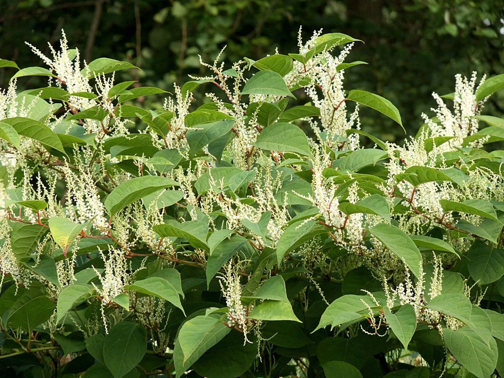

Partez à l'aventure
-
randonnéefauneinsolite

Signalement des Chenilles processionnaires du pin
Repérer les Chenilles processionnaires ou leurs nids dans des pinèdes, transmettre une photo géolocalisée.
Vallée du Valais, région lémanique • Printemps
-
baladeflore
Néophyte envahissante: Renouée du Japon
Signaler et participer à l’arrachage de cette néophyte envahissante très résistante.
Versoix, Genève • Toute l'année
-
baladefaune

Recensement du hérisson commun
Identifier et dénombrer, lors de promenades nocturnes, les populations de hérissons communs
Suisse Romande • Nuit du 10.07 au 10.08 2024
-
randonnéefauneinsolite
Signalement des Chenilles processionnaires du pin
Repérer les Chenilles processionnaires ou leurs nids dans des pinèdes, transmettre une photo géolocalisée.
Vallée du Valais, région lémanique • Printemps
-
baladeflore
Néophyte envahissante: Renouée du Japon
Signaler et participer à l’arrachage de cette néophyte envahissante très résistante.
Versoix, Genève • Toute l'année
-
baladefaune
Recensement du hérisson commun
Identifier et dénombrer, lors de promenades nocturnes, les populations de hérissons communs
Suisse Romande • Nuit du 10.07 au 10.08 2024
Comportez vous convenablement
Respectez la nature
- Se déplacer de manière adaptée : Favorisez la marche ou le vélo. Proscrivez tout autre moyen de déplacement, sauf en cas d’accessibilité réduite.
- Ne rien jeter : Collectez et gardez avec vous vos déchets, y compris les déchets compostables.
- Préserver le biotope : Laissez les choses à leur place. Ne pas cueillir ni ne ramasser de végétaux ou de minéraux.

Ne pas se mettre en danger
- Sécurité personnelle : Avant de partir en nature, assurez-vous d'avoir le matériel adéquat (vêtements appropriés, chaussures de marche, eau, trousse de premiers secours, etc.).
- Restez sur les sentiers balisés : évitez de vous aventurer en dehors des sentiers balisés, car cela peut être dangereux et endommager l’écosystème fragile.
- Prévoyez suffisamment de temps : estimez correctement le temps nécessaire pour terminer votre randonnée afin de ne pas vous retrouver pris au dépourvu lorsque la nuit tombe.
- Prévoyez suffisamment de temps : Vérifiez toujours la météo et évitez les Missions en cas de conditions dangereuses (tempêtes, fortes pluies, canicules).
- Communication : Informez toujours quelqu'un de votre itinéraire et de votre heure prévue de retour. Emportez un téléphone portable avec une batterie pleinement chargée.
Ne pas perturber les individus dans leur milieu
- Respect de l'habitat : Évitez de faire du bruit excessif, de déplacer des éléments naturels (comme des pierres ou des branches) ou de déranger les habitats naturels.
- Observation discrète : Utilisez des jumelles ou un appareil photo pour observer les animaux à distance. Évitez de vous approcher trop près des animaux sauvages.
- Suivre les consignes de l’application et des autorités : Ne vous introduisez pas dans une zone protégée ou un habitat naturel signalé en période de reproduction.
Ne pas entrer en contact physique direct avec les espèces
- Garder ses distances : Évitez tout contact physique avec les espèces végétales, d’insectes et animales. En cas de rencontre avec des animaux, maintenez vos distances et évitez de les nourrir.
- Ne pas intervenir soi-même : Ne tentez pas d’approcher ou de manipuler les animaux, même s'ils semblent blessés ou en détresse. Contactez les autorités compétentes pour intervenir.
- Transmission de maladies ou d’affections : Le contact direct avec certaines espèces peut transmettre des affections ou maladies.
Documenter plûtot qu'agir si vous êtes dans le doute
- Observation et documentation : Si vous êtes incertain sur une action à entreprendre, il est préférable de prendre des notes ou des photos et de signaler vos observations via l’application NaturaQuest.
- Assistance de l’IA : L’application NaturaQuest propose une fonctionnalité de reconnaissance des espèces végétales, des insectes et arachnides. Elle vous aidera à identifier de manière fiable un individu.